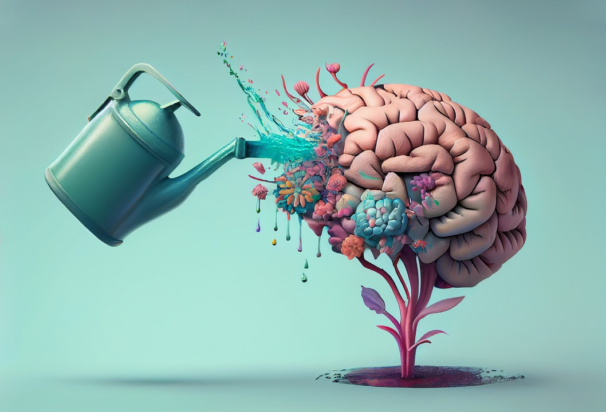

Saúde Mental

A Saúde Mental de uma pessoa está relacionada à forma como ela reage às exigências da vida e ao modo como harmoniza seus desejos, capacidades, ambições, ideias e emoções.
qual a importância da saúde mental?
A saúde mental é um importante fator que possibilita o ajuste necessário para lidar com as emoções positivas e negativas. Investir em estratégias que possibilitem o equilíbrio das funções mentais é essencial para um convívio social mais saudável.
Além de ser determinante para a estabilidade física, a saúde mental está relacionada à qualidade da interação individual e coletiva. No cenário atual, buscar alternativas que possibilitem a harmonia nessas relações é uma urgente necessidade.